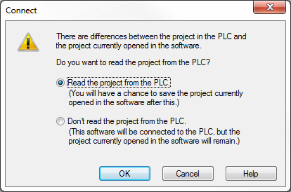
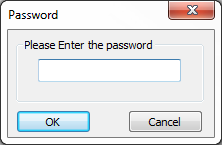
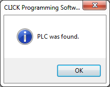
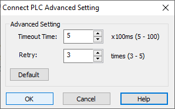

Topic: CL085


| Connect to CLICK PLC (USB) |
Topic: CL085
|
With this window you can Connect the CLICK Programming Software through your PC USB Port to the connected CLICK PLC.
The C0 series can only use a USB to RJ12 converter such as the EA-MG-PGM-CBL cable. The C2 Series can use an RJ12 Converter or because it has a USB port, it can also use an USB A to USB micro B cable such as the USB-CBL-AMICB6 cable.

Port Type: Select the Communication Port Type on this computer to connect to the target CLICK PLC.
COM Port No: Select the COM Port number of the USB Port on this computer.
Detail: Click on this button to see a list of COM Ports available on this computer.
Connection Test: To test the connection, click the Connection Test button. If the connection is working, you will see the Test Passed message. Click the OK button.


Port Type: Select the Communication Port Type on this computer to connect to the target CLICK PLC.
COM Port No: Select the COM Port number of the USB Port on this computer.
Detail: Click on this button to see a list of COM Ports available on this computer.
COM Port Setting: Match the COM Port Settings to the RS-232 Port Settings on the CLICK CPU Module. If Port 1 on the CLICK CPU Module is RS-232 port, the Port setup is fixed as shown below. This is the default setup of Port 2 also.
Auto Detect: Select Auto Detect to open the Auto Detect dialog.
Advanced: Select Advanced to open the Advance Settings dialog.
Default Setting: It is always possible to return to the CLICK PLC Default Port Settings by clicking the Default Setting button.
Connection Test: To test the settings, click the Connection Test button. If the settings are working, you will see the Test Passed message. Click the OK button.

The message shown below will appear if the offline program does not match the PLC program. See Connect and Read Project from PLC. Select Read the Project from the PLC or Don't read the project from the PLC and click OK.

For the C0 serial PLC's, if a password has been setup in the PLC project, the Password dialog will appear. Enter the password in the space provided on the dialog. Click OK to open the project in the Ladder Editor.

For the Ethernet PLC's, since a password for the admin account is required, the Login window will open. Enter the password in the space provided on the dialog. Click OK to open the project in the Ladder Editor.


Detect Setting: Specify the Com Port setup that you want to use to detect the PLC. Selecting All will take more time. To shorten the time to Auto Detect, select Fixed on values that are known.
Start: Click this button to Start the Auto Detect process.
Stop: Click this button to Stop the Auto Detect process.
Status: This Status area displays the current Com Port setup that the Auto Detect process is trying.
Once the Auto Detect process completes and the PLC has been located, the message shown below will display.


Timeout Time: Specify the Time Interval to wait for a response from the PLC.
Retry: Specify the number of Times to try to connect to the PLC.
Default: Reset the setup parameters to the Defaults.
Timeout Time = 5
Retry = 3